正文:
一只哈士奇，一只中华田园犬，第一次见面的场景很简单，现在都五岁了。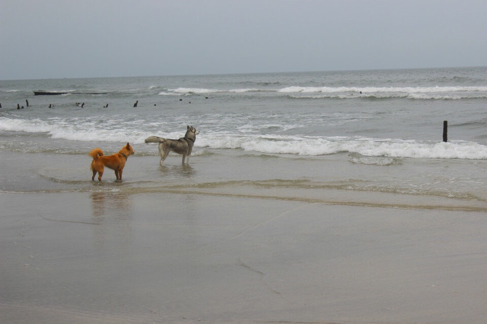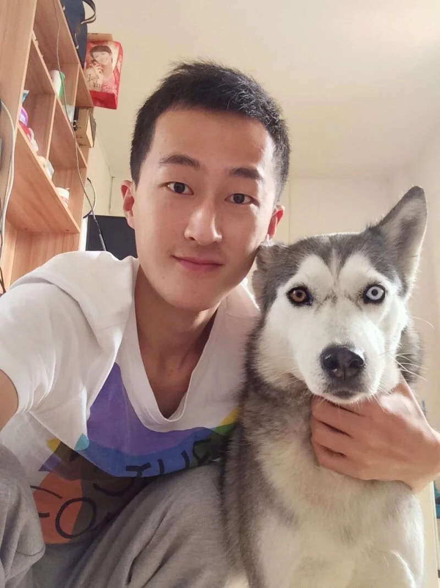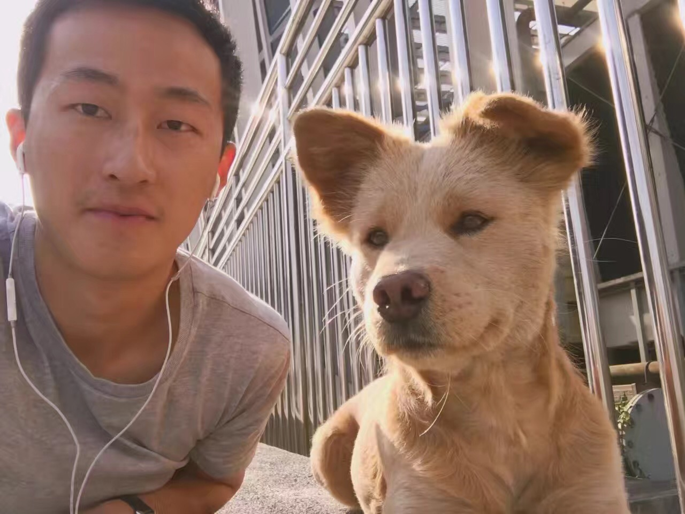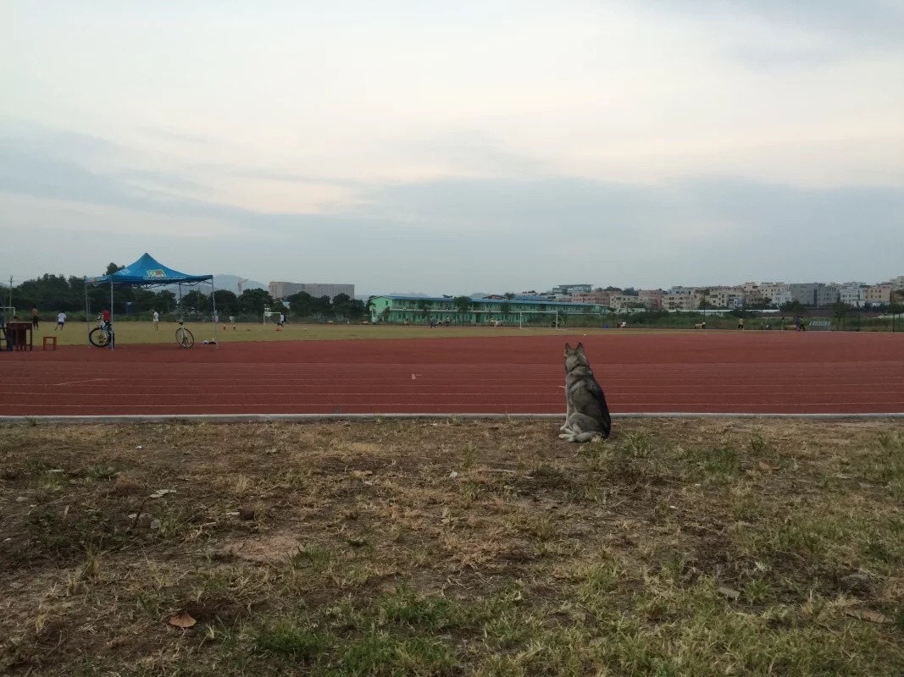
哈士奇
当时看了《南极大冒险》，觉得哈士奇好酷，就想要一只。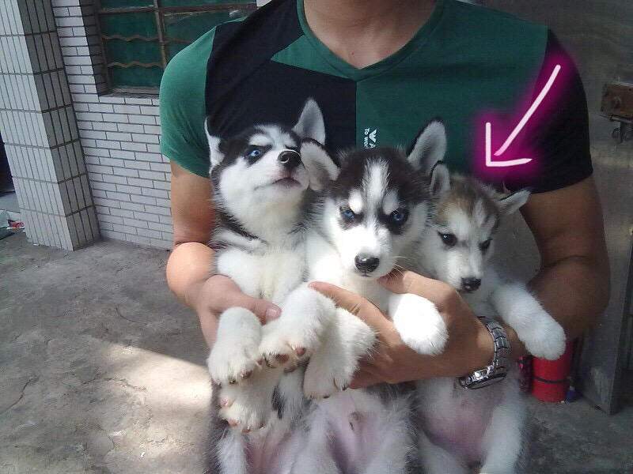本来喜欢的是黑白色的，预算不够，就买了阿棋，现在看看，阿棋的头版，骨量，毛量确实不如黑白色的两只。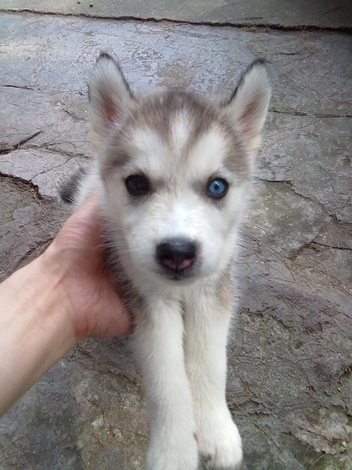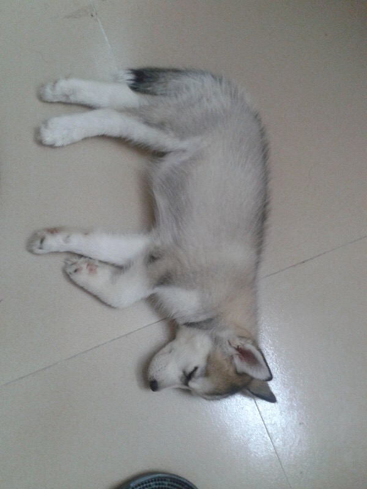
田园犬
在哈士奇回家后两个月到家的，带回家是因为当时一直想给阿棋找个伙伴，有天路过菜市场发现有卖自家小土狗，看着毛绒绒的，很可爱，就买了。
后来都长大了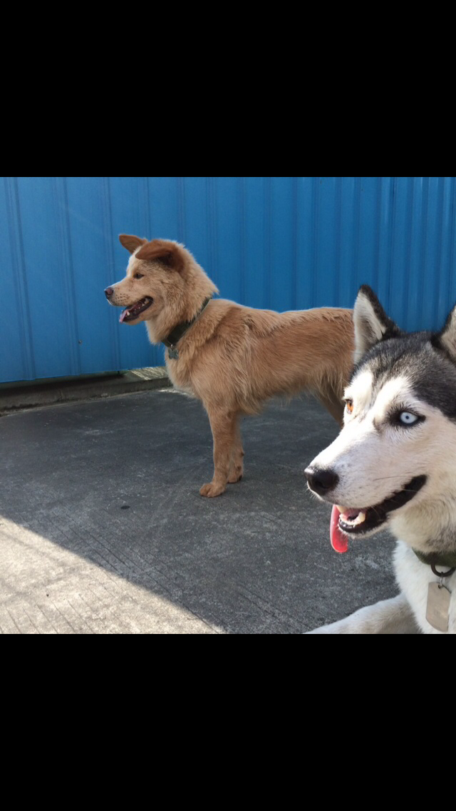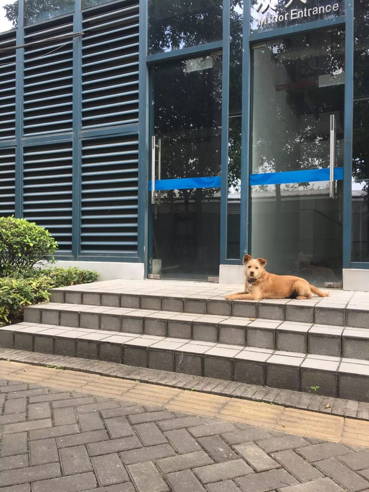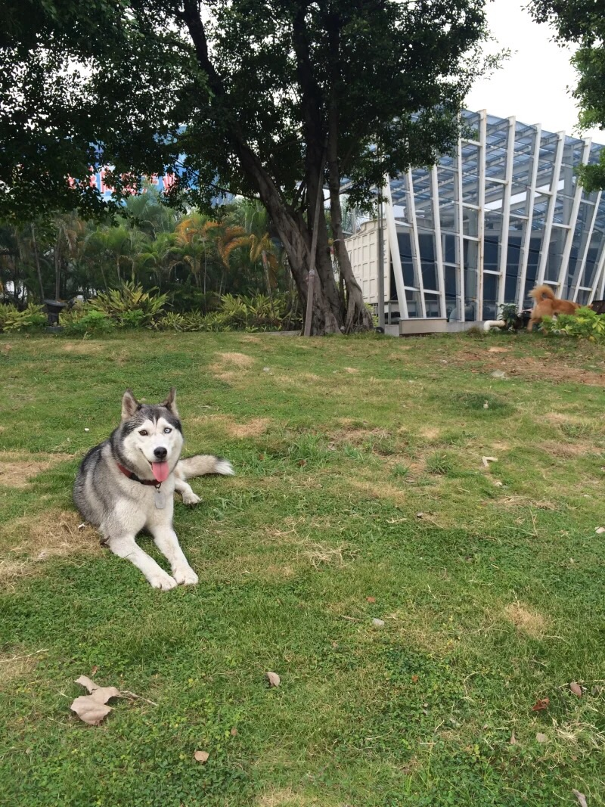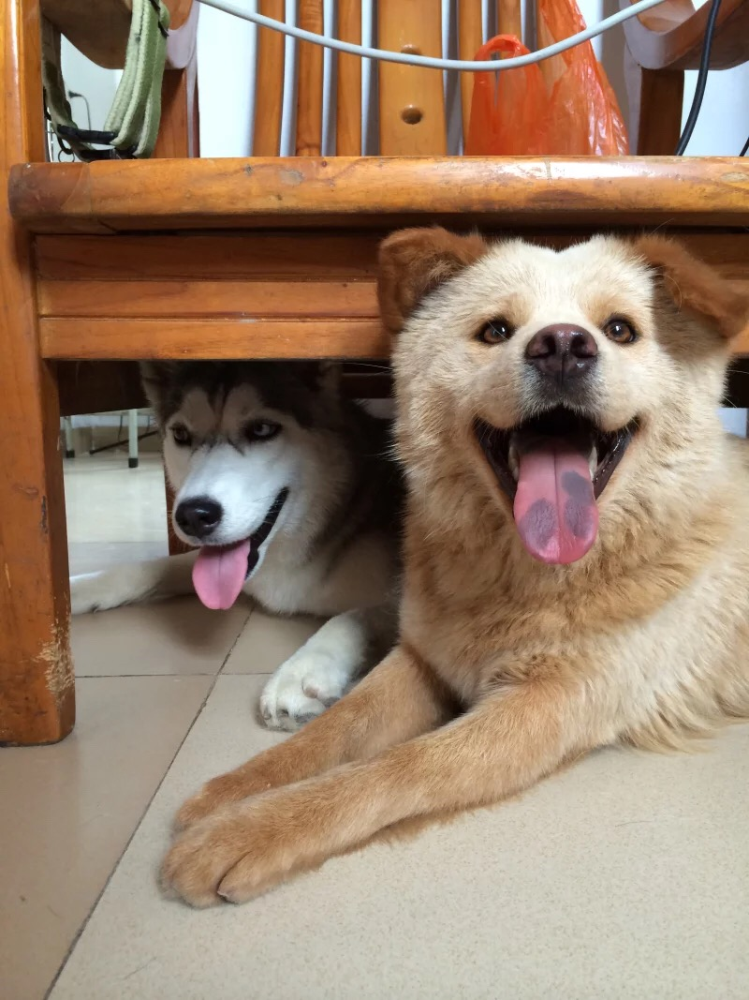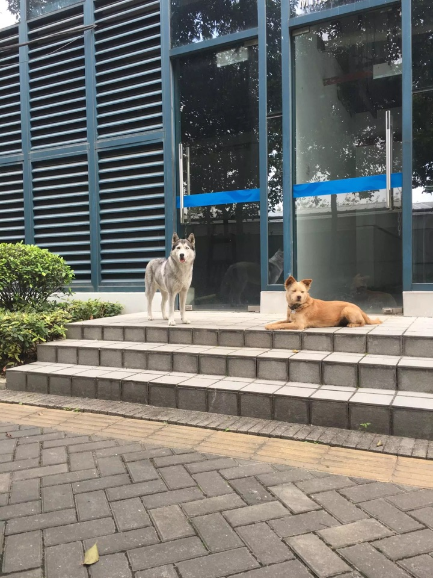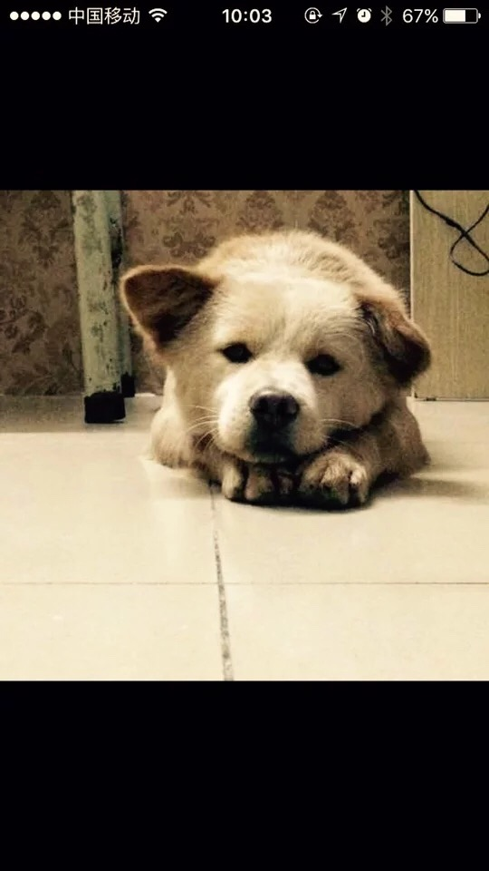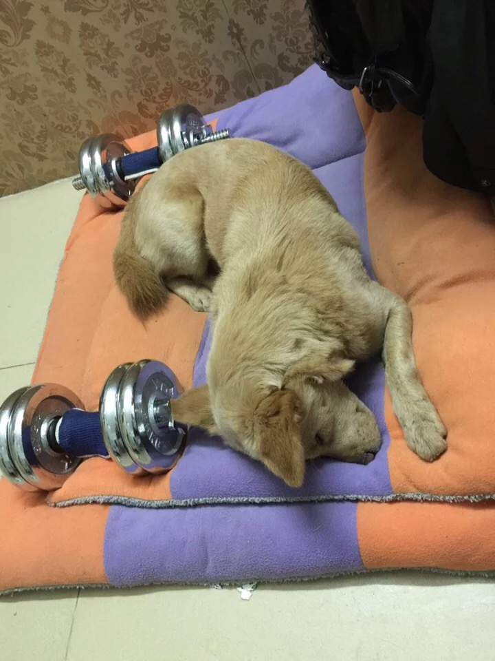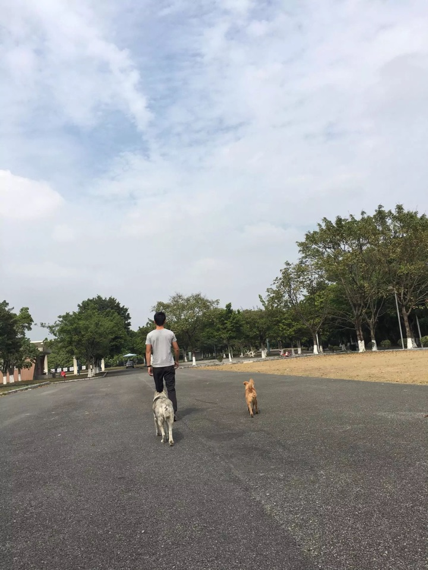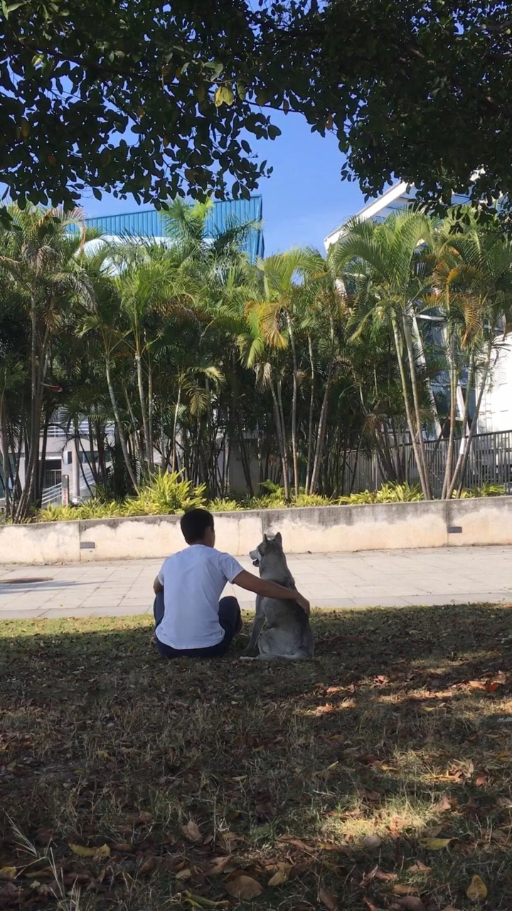
特别粘人的哈士奇，不乱跑，我去哪里跟着去哪里，哪怕我坐着然后站起来她都过来准备跟着我走。在另外一个回答里写过
https://www.zhihu.com/question/54074249/answer/141281836